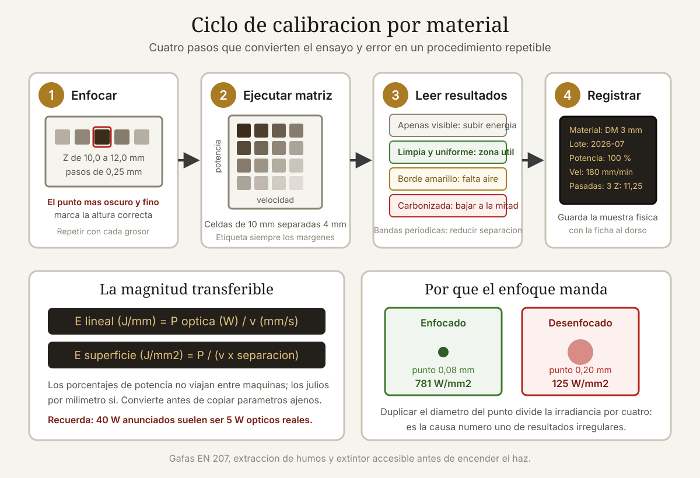

Qué cubre esta guía
Potencia óptica frente a potencia eléctrica
El primer obstáculo para calibrar es que la cifra que aparece en la caja rara vez es la que corta. La industria del láser de diodo asequible tiene una tradición consolidada de anunciar la potencia eléctrica de entrada en lugar de la potencia óptica de salida, que es la única que hace trabajo sobre el material.
| Se anuncia como | Potencia óptica real | Rendimiento | Qué es en realidad |
|---|---|---|---|
| «40 W» | 5 a 5,5 W | ~13 % | Un diodo de 5 W con consumo de 40 W |
| «80 W» | 10 W | ~13 % | Dos diodos combinados de 5 W |
| «130 W» | 20 W | ~15 % | Cuatro diodos combinados |
| «5,5 W ópticos» | 5,5 W | Declarado correctamente | Fabricante honesto |
| «20 W ópticos» | 20 W | Declarado correctamente | Módulo de gama alta multidiodo |
Longitud de onda y su importancia
Casi todos los láseres de diodo para grabado emiten en 445 a 455 nm, es decir, azul. Algunos módulos especializados usan 1.064 nm (infrarrojo) o 808 nm. La longitud de onda determina qué materiales absorben la energía y cuáles la reflejan o la transmiten:
| Material | Absorción a 450 nm | Absorción a 10.600 nm (CO₂) |
|---|---|---|
| Madera clara | Media-alta | Muy alta |
| Madera oscura o teñida | Muy alta | Muy alta |
| Acrílico transparente | Casi nula | Muy alta |
| Acrílico negro | Alta | Muy alta |
| Vidrio | Nula | Alta |
| Metal desnudo | Muy baja | Baja |
| Cuero natural | Alta | Muy alta |
De ahí sale la regla que más frustración evita: un láser de diodo azul no corta acrílico transparente ni marca vidrio directamente. No es cuestión de potencia ni de calibración; el material simplemente deja pasar esa longitud de onda.
La magnitud que realmente importa
Copiar «80 % de potencia y 1.000 mm/min» de un tutorial no funciona porque esos números solo tienen sentido junto con la potencia óptica de la máquina. La magnitud transferible entre equipos es la densidad de energía.
Energía lineal (para corte)
E_lineal (J/mm) = P_óptica (W) / v (mm/s)
Ejemplo: 5 W a 300 mm/min
v = 300 / 60 = 5 mm/s
E = 5 / 5 = 1,0 J/mmDensidad superficial de energía (para grabado)
E_superficie (J/mm²) = P (W) / (v (mm/s) × separación (mm))
Ejemplo: 5 W, 3.000 mm/min, 0,1 mm de separación
v = 50 mm/s
E = 5 / (50 × 0,1) = 1,0 J/mm²| Operación | Energía lineal orientativa | Observación |
|---|---|---|
| Grabado superficial ligero | 0,02 a 0,10 J/mm | Marca sin profundidad apreciable |
| Grabado marcado | 0,10 a 0,35 J/mm | Contraste alto, ligero relieve |
| Grabado profundo | 0,35 a 1,0 J/mm | Varias pasadas suele ser mejor |
| Corte de 3 mm de contrachapado | 1,2 a 2,0 J/mm | Depende mucho de la cola del contrachapado |
| Corte de 6 mm de madera maciza | 3,0 a 5,0 J/mm | Al límite de un módulo de 10 W |
Estos valores son puntos de partida, no recetas. La variabilidad entre lotes de un mismo material es sorprendentemente grande, sobre todo en contrachapado, donde el tipo de adhesivo cambia por completo el comportamiento.
Enfoque: el ajuste con más impacto
Antes de tocar la potencia hay que enfocar bien, porque el enfoque determina el tamaño del punto y con él la irradiancia, que escala con el cuadrado del diámetro.
Irradiancia (W/mm²) = P / área del punto
Punto de 0,08 × 0,08 mm → área 0,0064 mm² → 5 W / 0,0064 = 781 W/mm²
Punto de 0,20 × 0,20 mm → área 0,0400 mm² → 5 W / 0,0400 = 125 W/mm²Un desenfoque que duplica el diámetro del punto divide la irradiancia por cuatro. Es la causa número uno de resultados irregulares y de la sensación de que «el láser ha perdido potencia».
Métodos de enfoque, del peor al mejor
- Espaciador fijo del fabricante. Rápido y suficiente para empezar, pero ignora la tolerancia de tu módulo concreto y el grosor real del material.
- Prueba de rampa. Graba una línea sobre una pieza inclinada un ángulo conocido; el punto donde la línea es más fina y oscura marca el foco. Precisión de unas dos décimas.
- Matriz de altura. Graba cuadrados idénticos variando Z en pasos de 0,25 mm. El más oscuro y definido indica la altura óptima. Es el método más fiable y el que recomiendo.
- Sonda automática si tu máquina la incorpora. Cómoda, pero conviene verificarla con una matriz al menos una vez.
; Matriz de altura de enfoque: 9 cuadrados variando Z
G21 G90 ; milimetros, coordenadas absolutas
G0 X10 Y10 Z10 ; posicion inicial, Z de partida
M4 S0 ; modo laser dinamico, apagado
; Repetir bloque cambiando Z de 10,0 a 12,0 en pasos de 0,25
G0 X10 Y10
M3 S200 ; 20 % de potencia con S maximo 1000
G1 X20 F1200
G1 Y20
G1 X10
G1 Y10
M5 ; apagar
G0 Z0.25 ; subir un escalon (movimiento relativo si G91)Punto rectangular y orientación
Los diodos multimodo producen un punto rectangular, típicamente de 0,06 × 0,10 mm, no circular. Eso significa que el ancho del corte depende de la dirección del movimiento: una línea horizontal y una vertical tendrán grosores distintos. En grabados de líneas finas conviene tenerlo en cuenta al orientar el diseño sobre la pieza.
La matriz de prueba, paso a paso
Este es el núcleo del método. Una matriz de prueba es una rejilla donde cada celda se graba con una combinación distinta de potencia y velocidad, permitiendo ver de un vistazo el comportamiento de un material en todo el rango útil.
Diseño de la matriz
| Parámetro | Recomendación | Motivo |
|---|---|---|
| Tamaño de celda | 8 × 8 mm o 10 × 10 mm | Suficiente para juzgar el resultado a simple vista |
| Separación entre celdas | 3 a 5 mm | Evita que el calor de una afecte a la vecina |
| Número de celdas | 5 × 5 hasta 8 × 8 | Más allá cuesta comparar visualmente |
| Eje horizontal | Velocidad, en progresión geométrica | Cubre más rango con menos celdas |
| Eje vertical | Potencia, en progresión lineal | La respuesta a la potencia es más lineal |
| Etiquetas | Grabadas en los márgenes | Sin etiquetas la matriz es inútil una semana después |
Rangos de partida para grabado
- Velocidad: 500, 1.000, 2.000, 4.000, 8.000 mm/min.
- Potencia: 20 %, 40 %, 60 %, 80 %, 100 %.
- Separación de líneas: fija en 0,10 mm para toda la matriz.
Rangos de partida para corte
- Velocidad: 100, 150, 250, 400, 600 mm/min.
- Potencia: 60 %, 70 %, 80 %, 90 %, 100 %.
- Pasadas: una sola en la primera matriz; si nada corta, repite con dos o tres.
Cómo leer los resultados
| Aspecto de la celda | Diagnóstico | Ajuste |
|---|---|---|
| Apenas visible | Energía insuficiente | Subir potencia o bajar velocidad |
| Marca limpia y uniforme | Zona útil | Anotar y afinar alrededor |
| Bordes amarillentos o quemados | Exceso de energía o falta de aire | Bajar potencia; activar asistencia de aire |
| Superficie carbonizada y hundida | Energía muy excesiva | Reducir a la mitad |
| Marca irregular a lo largo de la celda | Enfoque incorrecto o holgura mecánica | Reenfocar; revisar correas y ruedas |
| Bandas horizontales periódicas | Separación de líneas demasiado grande | Reducir a 0,08 o 0,06 mm |
Parámetros por material
Valores de partida para un módulo de 5 W ópticos a 450 nm con enfoque correcto y asistencia de aire. Ajusta proporcionalmente si tu potencia óptica difiere: con 10 W puedes duplicar la velocidad manteniendo el resultado.
Maderas
| Material | Operación | Potencia | Velocidad | Pasadas |
|---|---|---|---|---|
| Contrachapado 3 mm | Corte | 100 % | 180 mm/min | 2 a 3 |
| Contrachapado 3 mm | Grabado | 30 % | 3.000 mm/min | 1 |
| MDF 3 mm | Corte | 100 % | 150 mm/min | 3 |
| Pino macizo 6 mm | Corte | 100 % | 90 mm/min | 4 a 5 |
| Balsa 3 mm | Corte | 70 % | 500 mm/min | 1 |
| Bambú | Grabado | 45 % | 2.500 mm/min | 1 |
| Roble | Grabado | 40 % | 2.000 mm/min | 1 |
Plásticos
| Material | Operación | Potencia | Velocidad | Nota |
|---|---|---|---|---|
| Acrílico negro 3 mm | Corte | 100 % | 120 mm/min | 3 pasadas; bordes menos pulidos que con CO₂ |
| Acrílico transparente | — | — | — | No procesable con diodo azul |
| Acrílico transparente pintado por detrás | Grabado | 60 % | 1.500 mm/min | Se graba la pintura, no el acrílico |
| Delrin (POM) negro | Corte | 100 % | 100 mm/min | Humos irritantes; extracción obligatoria |
| PET / PETG | Grabado | 25 % | 4.000 mm/min | Se deforma con facilidad |
| PVC y vinilo | — | — | — | PROHIBIDO: libera cloro |
| Policarbonato | — | — | — | Se amarillea y arde; no recomendable |
Otros materiales
| Material | Operación | Potencia | Velocidad | Nota |
|---|---|---|---|---|
| Cuero natural 2 mm | Corte | 100 % | 200 mm/min | 2 pasadas; olor intenso |
| Cuero natural | Grabado | 35 % | 2.500 mm/min | Contraste excelente |
| Cartón 2 mm | Corte | 80 % | 400 mm/min | Riesgo de ignición: no dejar sin vigilancia |
| Papel Kraft | Corte | 40 % | 1.500 mm/min | Muy propenso a arder |
| Corcho 3 mm | Corte | 90 % | 250 mm/min | 2 pasadas |
| Fieltro de lana | Corte | 60 % | 600 mm/min | El sintético funde en lugar de cortar |
| Acero inoxidable | Marcado | 100 % | 200 mm/min | Solo con spray de marcado tipo molibdeno |
| Aluminio anodizado | Marcado | 100 % | 400 mm/min | Blanquea el anodizado; no graba el metal |
| Vidrio | Marcado | 100 % | 300 mm/min | Requiere capa sacrificial de pintura o papel húmedo |
| Piedra y pizarra | Grabado | 100 % | 800 mm/min | Resultado muy dependiente del tipo de piedra |
Pasadas múltiples y asistencia de aire
Por qué varias pasadas rápidas superan a una lenta
Con la misma energía total, repartirla en varias pasadas rápidas casi siempre da mejor resultado que concentrarla en una lenta. Los motivos son físicos:
- Menos calor acumulado en cada punto, lo que reduce la zona afectada térmicamente y el ennegrecimiento del borde.
- El humo y los residuos se evacúan entre pasadas, en lugar de absorber el haz de la propia pasada.
- El corte se profundiza progresivamente y el haz mantiene mejor su enfoque relativo dentro de la ranura.
- Menor riesgo de ignición, porque el material no permanece tanto tiempo bajo el haz.
| Estrategia | Ancho de la ranura | Ennegrecimiento del borde | Tiempo total |
|---|---|---|---|
| 1 pasada a 100 mm/min | 0,35 mm | Alto | Referencia |
| 2 pasadas a 200 mm/min | 0,25 mm | Medio | Similar |
| 4 pasadas a 400 mm/min | 0,20 mm | Bajo | Similar |
| 6 pasadas a 600 mm/min | 0,18 mm | Muy bajo | Algo mayor por aceleraciones |
El límite práctico está en torno a cuatro o seis pasadas: por encima, el tiempo perdido en aceleraciones y deceleraciones en los extremos empieza a dominar.
Asistencia de aire
Es la mejora más rentable que se le puede hacer a un láser de diodo, y muchos usuarios la descubren tarde. Un chorro de aire dirigido al punto de corte hace tres cosas simultáneamente:
- Aparta el humo del camino del haz. El humo absorbe luz azul con notable eficacia; sin aire puedes estar perdiendo un 20 a 30 % de la potencia útil.
- Enfría el borde del corte, reduciendo la carbonización y el amarilleo.
- Protege la lente del hollín, que de otro modo se deposita y degrada la potencia progresivamente.
| Fuente de aire | Caudal | Ruido | Idoneidad |
|---|---|---|---|
| Bomba de acuario de 5 W | 3 a 5 L/min | Bajo | Insuficiente para cortar; sirve para grabar |
| Bomba de acuario de 20 W | 15 a 30 L/min | Medio | Buena para la mayoría de usos |
| Compresor con calderín y regulador | Regulable | Alto al cargar | Óptimo: presión constante y regulable |
| Ventilador de PC redirigido | Alto volumen, baja presión | Bajo | No sirve: falta presión en el punto |
Limpieza de la lente
Una lente sucia es la explicación más frecuente de «mi láser ya no corta como antes». Revísala cada 8 a 10 horas de trabajo, límpiala con alcohol isopropílico de 99 % y un bastoncillo sin pelusa, siempre con el módulo frío y desconectado. Una película de hollín invisible a simple vista puede recortar un 30 % de la potencia.
Seguridad: lo que no es negociable
Un módulo de 5 W ópticos concentrado en un punto de 0,08 mm produce cerca de 800 W/mm². Es más que suficiente para causar daño ocular permanente en un tiempo de exposición menor que el reflejo de parpadeo.
| Medida | Requisito concreto | ¿Negociable? |
|---|---|---|
| Gafas de protección | Certificadas EN 207 u OD 5+ para 400 a 470 nm | No |
| Cerramiento | Paneles opacos o de acrílico naranja específico para láser | No, si hay terceros cerca |
| Extracción de humos | Conducto al exterior o filtro de carbón activo | No |
| Extintor | Clase ABC accesible en menos de tres segundos | No |
| Supervisión | Presencia durante todo el trabajo | No |
| Detector de humo | En el mismo recinto | Muy recomendable |
| Superficie de trabajo | Rejilla metálica o panal de aluminio | Recomendable |
Los humos
La combustión de madera, cuero o acrílico genera partículas finas, monóxido de carbono y compuestos orgánicos volátiles. Un ventilador que empuja el humo hacia la habitación no es extracción: es redistribución. La instalación correcta lleva el conducto al exterior o pasa por un filtro combinado de partículas y carbón activo con caudal suficiente para renovar el volumen del cerramiento varias veces por minuto.
Antes de cada trabajo
- Verificar que el material no contiene cloro ni es desconocido.
- Comprobar el enfoque para el grosor concreto de la pieza.
- Confirmar que la extracción está encendida y que el aire de asistencia fluye.
- Ejecutar el recorrido del marco con el láser apagado o a potencia mínima, para verificar los límites.
- Ponerse las gafas antes de iniciar, no después.
Conclusión
Calibrar un láser de diodo no consiste en encontrar el número mágico, sino en construir un procedimiento repetible. Los tres pilares son siempre los mismos: conocer la potencia óptica real de tu módulo, enfocar con una matriz de altura para cada grosor de material y ejecutar una matriz de potencia contra velocidad para cada material nuevo.
Con esos tres hábitos, las tablas de este artículo dejan de ser recetas y se convierten en puntos de partida que ajustas en veinte minutos. Y si razonas en términos de energía lineal en julios por milímetro en lugar de porcentajes de potencia, podrás trasladar parámetros entre máquinas distintas con fundamento en lugar de por ensayo y error.
Dos inversiones cambian el resultado más que cualquier ajuste de software: asistencia de aire con presión suficiente y gafas certificadas EN 207. La primera mejora todos tus cortes de forma inmediata; la segunda es la única que no admite alternativa.
Preguntas frecuentes
¿Por qué mi láser de diodo no corta acrílico transparente?
Porque el acrílico transparente no absorbe la longitud de onda azul de cuatrocientos cincuenta nanómetros: la deja pasar prácticamente sin interacción, igual que el vidrio deja pasar la luz visible. No es un problema de potencia ni de calibración, y aumentar los vatios no lo resuelve. Las alternativas son usar acrílico negro o de colores oscuros, que sí absorben, aplicar una capa sacrificial de pintura o cinta de carrocero por la cara superior, o recurrir a un láser de dióxido de carbono, cuya longitud de onda de diez mil seiscientos nanómetros es absorbida por todos los acrílicos.
¿Cómo sé la potencia óptica real de mi módulo láser?
Si el fabricante no la declara explícitamente como potencia óptica o de salida, divide la cifra anunciada entre siete u ocho: un módulo vendido como de cuarenta vatios entrega en torno a cinco vatios ópticos. Para medirla de verdad necesitas un medidor de potencia láser, un instrumento que ronda los cien a trescientos dólares en versiones básicas. Una alternativa indirecta es comparar tu capacidad de corte con la de un módulo de potencia óptica conocida sobre el mismo material y grosor: si necesitas el doble de pasadas, tienes aproximadamente la mitad de potencia.
¿Es mejor una pasada lenta o varias pasadas rápidas?
Varias pasadas rápidas en casi todos los casos. Con la misma energía total, repartirla reduce el calor acumulado en cada punto, disminuye la zona afectada térmicamente y produce bordes mucho más limpios. Además el humo se evacúa entre pasadas en lugar de absorber el haz, y el riesgo de ignición baja notablemente. El punto de equilibrio suele estar entre tres y cinco pasadas: más allá, el tiempo perdido en las aceleraciones de los extremos empieza a dominar sobre el beneficio.
¿Qué materiales no debo cortar nunca con láser?
Cualquier material que contenga cloro está terminantemente prohibido: PVC, vinilo, cuero sintético con base de PVC y cloruro de polivinilideno. Al descomponerse liberan cloruro de hidrógeno que forma ácido clorhídrico con la humedad, corroe la mecánica y la electrónica de la máquina en semanas y es gravemente tóxico por inhalación. Tampoco conviene procesar policarbonato, que se amarillea y arde, ni fibra de vidrio o materiales con resinas epoxi, que emiten humos peligrosos, ni ABS, que produce cianuro de hidrógeno. Ante un plástico desconocido, no lo pongas en la máquina.
¿Cada cuánto debo recalibrar los parámetros?
Recalibra siempre que cambies de material, de proveedor o incluso de lote, porque la variabilidad del contrachapado y del MDF es notable según el adhesivo empleado. También al modificar el enfoque, al añadir o quitar la asistencia de aire, y tras limpiar la lente si estaba muy sucia. Como rutina de mantenimiento, ejecuta una matriz de referencia sobre un material patrón cada cincuenta horas de trabajo: si los resultados se han desplazado, es señal de que la lente está sucia o de que el diodo ha perdido potencia por envejecimiento.
¿Sirven las gafas naranjas que vienen con la máquina?
En general no. Las gafas genéricas que acompañan a las máquinas económicas reducen el deslumbramiento pero rara vez garantizan la densidad óptica necesaria a la longitud de onda del equipo, y casi nunca llevan certificación verificable. Necesitas gafas con marcado EN 207 que indiquen de forma explícita el rango de longitud de onda protegido, que debe cubrir de cuatrocientos a cuatrocientos setenta nanómetros para un diodo azul, y el número de escala correspondiente. Cuestan entre treinta y ochenta dólares y son la única protección real frente a un daño retiniano que ocurre en menos tiempo del que tarda el parpadeo reflejo.
Este artículo es contenido editorial independiente: no contiene ubicaciones patrocinadas ni enlaces de afiliado. Si en futuras actualizaciones se agregan enlaces a proveedores de componentes, serán identificados explícitamente. El código y las conexiones son referenciales y deben adaptarse y probarse con tu propio hardware. Si detectas un error en esta guía, por favor avísanos.
Sigue aprendiendo
Verifica que la electrónica de tu máquina no tenga puntos calientes con la guía de cámaras térmicas para detectar cortocircuitos, y protege los trabajos largos frente a cortes de energía con los mejores UPS para taller.
Fuentes primarias y lecturas recomendadas
Normas de seguridad láser y documentación técnica de fabricantes. Verifica siempre la certificación concreta de tu equipo de protección ocular.
- IEC 60825-1 — Seguridad de los productos láser: clasificación y requisitos
- EN 207 — Protección individual de los ojos frente a la radiación láser
- OSHA — Laser Hazards, Safety and Health Topics
- LightBurn Software — Documentación oficial de parámetros y pruebas de material
- Laser Institute of America — ANSI Z136.1 Safe Use of Lasers
- NIOSH — Control of Smoke From Laser/Electric Arc Surgical Procedures
Enlaces revisados: 15 de agosto de 2026.